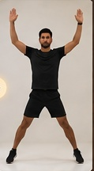

Training grounds · Daily quest
Today's Training
This is a demo exercise. In the connected application, Django supplies a validated workout tailored by the AI.
Cardio No equipment
+200 Aura on completionJumping Jacks
Exercise 2 of 3 · 3 sets × 40 seconds
00:40Set 1 / 3
Instructions
- Stand tall with feet together and arms by your sides.
- Jump feet apart while raising your arms overhead.
- Return to the starting position with controlled movement.
- Keep a comfortable pace and breathe steadily.
sAI Coach
Keep your movement controlled. If you experience pain, stop and adjust rather than pushing through it.
Safety note: use an appropriate space and pace. This prototype is not medical advice; stop if you experience concerning pain or symptoms.